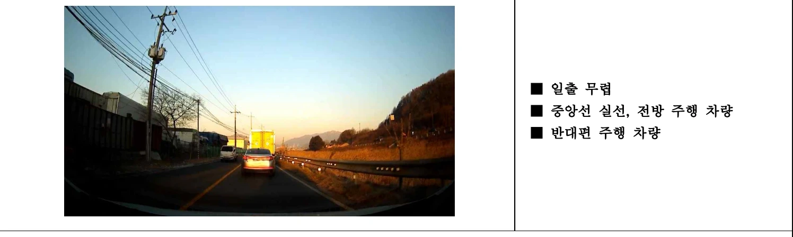

716. Hai phương pháp lái xe an toàn nhất trong tình huống sau đây là gì?

- ①Vì là lúc bình minh, ánh sáng không sáng bằng ban ngày, nên bật đèn pha và liên tục sử dụng còi xe khi lái xe.
- ②Sau khi xe ngược chiều đã đi qua, đảm bảo tầm nhìn đầy đủ rồi vượt xe một cách nhanh chóng.
- ③Vì có thể xảy ra tình huống bất ngờ trước xe tải phía trước, nên duy trì khoảng cách an toàn đầy đủ khi lái xe.
- ④Vì là đường có vạch liền ở giữa, không được vượt xe.
- ⑤Để duy trì luồng giao thông suôn sẻ, hãy bấm còi để xe phía trước tăng tốc.
Xem đáp án
Đáp án
③ Vì có thể xảy ra tình huống bất ngờ trước xe tải phía trước, nên duy trì khoảng cách an toàn đầy đủ khi lái xe.
④ Vì là đường có vạch liền ở giữa, không được vượt xe.
Căn cứ
Khi bám theo xe phía trước đi cùng chiều, người điều khiển xe nào cũng phải đảm bảo khoảng cách cần thiết để tránh va chạm với xe phía trước nếu xe phía trước dừng lại đột ngột (Điều 19, Khoản 1 Luật Giao thông đường bộ). Đặc biệt, khi lái xe phía sau xe chở hàng lớn cần phải chừa khoảng cách vừa đủ an toàn vì khó đảm bảo tầm nhìn phía trước và có thể xảy ra tình huống bất ngờ. Ngoài ra, việc vượt bị cấm ở những đoạn mà vạch tim được lắp làm vạch liền (Quy tắc thi hành luật giao thông đường bộ [Phụ lục 6] Vạch tim tim số 501). Mặt khác, việc sử dụng liên tục đèn pha và còi có thể gây nguy hiểm do cản trở tầm nhìn của người lái xe khác hoặc tạo ra tiếng ồn không cần thiết.
Phần căn cứ là bản dịch máy để tham khảo.